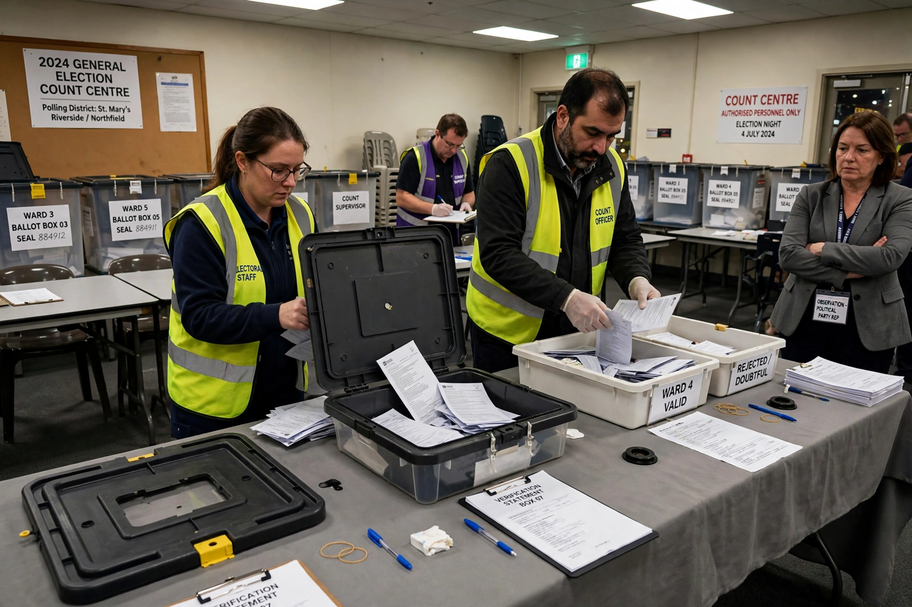

Electoral system
From Wikipedia, the free encyclopedia

An electoral system is the set of rules that determine how elections are conducted and how their results are converted into seats or offices. Systems divide broadly into plurality/majoritarian systems (First-past-the-post voting, two-round, alternative vote), Proportional representation systems (party-list PR, the Single transferable vote) and mixed systems (Mixed-member proportional representation). The choice among them shapes party systems, governments and voters' behaviour more than any other constitutional variable.
Families and trade-offs
Duverger's law associates plurality rules with two parties and PR with multi-party coalitions. Majoritarian systems favour clear winners, single-party governments and strong constituency links at the price of disproportional results (in the UK's 2024 election, Labour won about 63% of seats on 34% of votes); PR mirrors the vote, empowers smaller parties and coalition bargaining, and weakens the local link — trade-offs every reform debate from New Zealand (adopted MMP in 1996) to Canada and the UK replays.
Components
District magnitude, ballot structure (categorical versus preferential), thresholds, assembly size and formula (D'Hondt versus Sainte-Laguë) are the system's moving parts. Non-partisan and authoritarian systems adapt electoral forms without competition; the scholarly standard (Gallagher's disproportionality index) lets voters see how far their system strays from one person, one vote, one value.